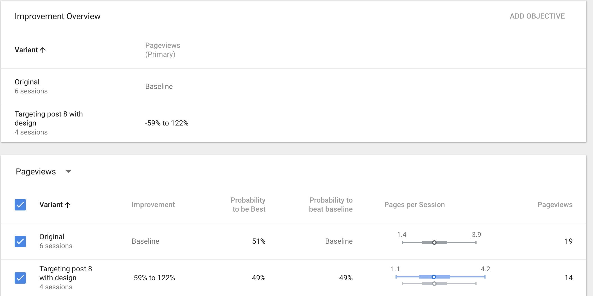

Welcome back to my blog!
Recap
In this week’s discussion, I want to go over a few experiments that I conducted with Google Analytics. Last week’s post was about my first experiment using Google Optimize, testing if my changes had any effect on user flow. With the data coming into my Optimize dashboard, I was able to determine that the design to Week’s 8 Post did not influence users behavior.
Not seeing my change improve the way users interact with my blog was not a bad thing. Of course, I would have liked to see my experiment make a difference but in a way it did. I tested a theory, the results verified, I did not need to make changes. I got the answers I needed to move onto other ways to improve my traffic rate, I call that a success!
Here is another look at those results.
You will notice I have the original page and the variant(experiment), showing sessions and the number of pageviews. Even though I did not have many users on my site to have a better calculated result, it does provide enough data. It concludes that making a section with more pizazz and including the description of the link, will not influence there needs to look.
Conclusion
Google Analytics and tools like, Google Optimize are effective and necessary for Developers to make a better web experience for users.
I will continue building my blog by adding entertaining content for users such as utilizing media, color, animation and fun facts about the web. I want to build on this site to give users a reason to come back. In doing so, I will have more traffic giving me more play time using all the glorious tools from Google Analytics! Cheers!